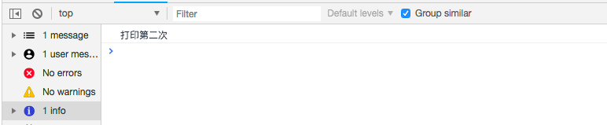
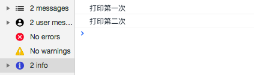
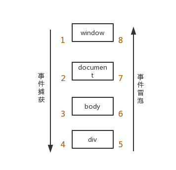
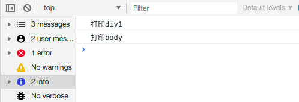
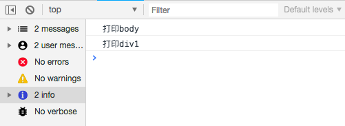
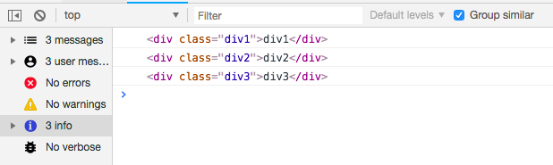

彻底弄懂JS事件委托的概念和作用
一、写在前头
接到某厂电话问什么是事件代理的时候,一开始说addEventListener,然后他说直接绑定新的元素不会报dom不存在的错误吗？然后我就混乱了,我印象中这个方法是可以绑定新节点的。后面才知道,原来他要考察的是事件委托(代理)的原理,他指的是未来还不清楚会创建多少个节点,所以没办法实现给他们注册事件。
二、事件委托(事件代理)的作用?
为了方便理解,我先把事件委托的作用写一下。
- 支持为同一个DOM元素注册多个同类型事件
- 可将事件分成事件捕获和事件冒泡机制
例子解析:
注册多个事件
用以往注册事件的方法,如果存在多个事件,后注册的事件会覆盖先注册的事件
//index.html
<div id="div1"></div>
window.onload = function(){
let div1 = document.getElementById('div1');
div1.onclick = function(){
console.log('打印第一次')
}
div1.onclick = function(){
console.log('打印第二次')
}
}

可以看到第二个点击注册事件覆盖了第一个注册事件,只执行了console.log('打印第二次');
用addEventListener(type,listener,useCapture)实现
- type: 必须,String类型,事件类型
- listener: 必须,函数体或者JS方法
- useCapture: 可选,boolean类型。指定事件是否发生在捕获阶段。默认为false,事件发生在冒泡阶段
<div id="div1"></div>
window.onload = function(){
let div1 = document.getElementById('div1');
div1.addEventListener('click',function(){
console.log('打印第一次')
})
div1.addEventListener('click',function(){
console.log('打印第二次')
})
}
可以看到两个注册事件都成功触发了。 useCapture是事件委托的关键,我们后面详解
- 事件捕获和事件冒泡机制
- 事件捕获
当一个事件触发后,从Window对象触发,不断经过下级节点,直到目标节点。在事件到达目标节点之前的过程就是捕获阶段。所有经过的节点,都会触发对应的事件 - 事件冒泡
当事件到达目标节点后，会沿着捕获阶段的路线原路返回。同样，所有经过的节点,都会触发对应的事件

通过例子理解两个事件机制:
例子：假设有body和body节点下的div1均有绑定了一个注册事件.
效果：
当为事件捕获(useCapture:true)时,先执行body的事件,再执行div的事件
当为事件冒泡(useCapture:false)时,先执行div的事件,再执行body的事件
//当useCapture为默认false时,为事件冒泡
<body>
<div id="div1"></div>
</body>
window.onload = function(){
let body = document.querySelector('body');
let div1 = document.getElementById('div1');
body.addEventListener('click',function(){
console.log('打印body')
})
div1.addEventListener('click',function(){
console.log('打印div1')
})
}
//结果:打印div1 打印body
//当useCapture为true时,为事件捕获
<body>
<div id="div1"></div>
</body>
window.onload = function(){
let body = document.querySelector('body');
let div1 = document.getElementById('div1');
body.addEventListener('click',function(){
console.log('打印body')
},true)
div1.addEventListener('click',function(){
console.log('打印div1')
})
}
//结果:打印body 打印div1
三、事件委托和新增节点绑定事件的关系？
事件委托的优点:
- 提高性能:每一个函数都会占用内存空间，只需添加一个事件处理程序代理所有事件,所占用的内存空间更少。
- 动态监听:使用事件委托可以自动绑定动态添加的元素,即新增的节点不需要主动添加也可以一样具有和其他元素一样的事件。
例子解析:
<script>
window.onload = function(){
let div = document.getElementById('div');
div.addEventListener('click',function(e){
console.log(e.target)
})
let div3 = document.createElement('div');
div3.setAttribute('class','div3')
div3.innerHTML = 'div3';
div.appendChild(div3)
}
</script>
<body>
<div id="div">
<div class="div1">div1</div>
<div class="div2">div2</div>
</div>
</body>虽然没有给div1和div2添加点击事件,但是无论是点击div1还是div2,都会打印当前节点。因为其父级绑定了点击事件,点击div1后冒泡上去的时候,执行父级的事件。
分别点击div1、div2、div3

这样无论后代新增了多少个节点,一样具有这个点击事件的功能。这一个就是考察者想要听到的答案。
分类:
JS/ES6